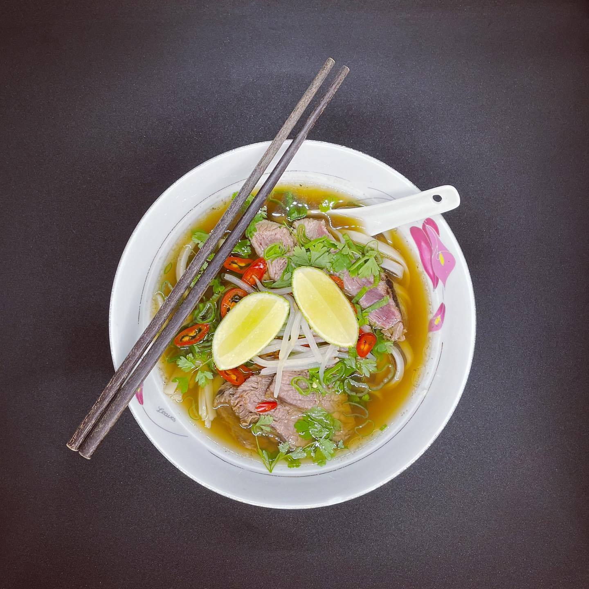

Hovädzia polievka podľa @walrus.buko — Normy Jedál
Hovädzie Pho Bo 🇻🇳
#eatatwalrus 🎬 Link na YT v BIO 🎬 Big thanks za každý páčik, odber, či Patreon💥
#pho #phobo #hovadziepho #vietnamskapolievka #hovadziapolievka #recept #receptna #akosavari #akonavarit #steak #rumpsteak #hovadziemaso #jedlo #varenie #kuchyna #zdravastrava #zdravejedlo #zdravevarenie #domacirecept #domacevarenie #azijskapolievka #azijskakuchyna #azijskyrecept #vietnamskakuchyna #vietnamskyrecept